= 0) and that the errors for each column add to zero (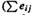 = 0). The preceding equation, expressed in terms of sums of squares, can be written as
= 0) and that the errors for each column add to zero (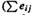 = 0). The preceding equation, expressed in terms of sums of squares, can be written as| Previous | Table of Contents | Next |
Each observation has been broken into three parts: a grand mean µ, the processor effect αj’s, and the residuals. A matrix notation is used for all three parts. The sum of squares of entries in the residual matrix is
SSE = (-30.4)2 + (-54.4)2 + ... + (76.6)2 = 94,365.20
As in the case of 2kr designs, the total variation of y in a one-factor experimental design can be allocated to the factor and errors. To do so, we square both sides of the model equation:
y2ij = µ2 + α2j + e2ij + 2µαj + 2µej + 2µjαij
Adding corresponding terms of ar such equations, we obtain
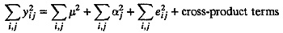
The cross-product terms all add to zero due to the constraints that the effects add to zero ( = 0) and that the errors for each column add to zero (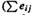 = 0). The preceding equation, expressed in terms of sums of squares, can be written as
SSY = SS0 + SSA + SSE
where SSY is the sum of squares of y, SS0 is the sum of squares of grand means, SSA is the sum of squares of effects, and SSE is the sum of square errors. Note that SS0 and SSA can be easily computed as follows:
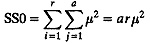
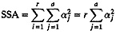
Thus, SSE can be calculated easily from SSY without calculating individual errors.
The total variation of y (SST) is defined as
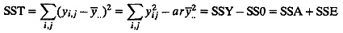
The total variation can therefore be divided into two parts, SSA and SSE, which represent the explained and the unexplained parts of the variation. They can be expressed as percentage of the total variation. A high percentage of explained variation indicates a good model.
In allocating the variation to different factors in Section 20.4, an informal approach was used that is very helpful in practice. In that approach, any factor that explained a high percentage of variation was considered important. This importance should be distinguished from significance, which is a statistical term. To determine if a factor has a significant effect on the response, statisticians compare its contribution to the variation with that of the errors. If unexplained variation (due to errors) is high, a factor explaining a large fraction of the variation may turn out to be statistically insignificant. The statistical procedure to analyze the significance of various factors is called Analysis Of Variance (ANOVA). The procedure for one-factor experiments is very similar to that explained earlier in Section 15.1.
To understand ANOVA, consider the sum of squares—SSY, SS0, SSA, and SSE. Each of the sums of squares has an associated degree of freedom that corresponds to the number of independent values required to compute them. The degrees of freedom for the sums are as follows:
SSY = SS0 + SSA + SSE
ar = 1 + (a - 1) + a(r - 1)
The sum SSY consists of a sum of ar terms, all of which can be independently chosen. This therefore has ar degrees of freedom. The sum SS0 consists of a single term µ2 that is repeated ar times. Once a value for µ has been chosen, SS0 can be computed. Thus, SS0 has one degree of freedom.
| TABLE 20.3 ANOVA Table for One-Factor Experiments | ||||||
|---|---|---|---|---|---|---|
| Component | Sum of Squares | Percentage of Variation | Degrees of Freedom | Mean Square | F- Computed | F- Table |
| y | 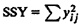 | ar | ||||
| 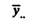 | SSO = arµ2 | 1 | ||||
| 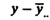 | SST = SSY - SSO | 100 | ar - 1 | |||
| A | 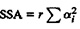 | 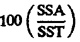 | a - 1 | 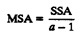 | F[1-α; a-1,a(r - 1)] | |
| e | SSE = SST - SSA | 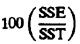 | a(r - 1) | 
| ||
| 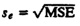 | ||||||
The sum SSA contains a sum of a terms — α2j—but only a - 1 of these are indepdendent since the αj’s add up to zero. Therefore, SSA has a - 1 degrees of freedom. The sum SSE consists of ar error terms of which only a(r - 1) can be independently chosen. This is because the r errors corresponding to r replications of each experiment must add up to zero. Thus, only r - 1 errors in each of a experiments are independent.
Notice that the degrees of freedom on the two sides of the preceding equations also add up. This verifies that the degrees of freedom have been correctly assigned.
| Previous | Table of Contents | Next |